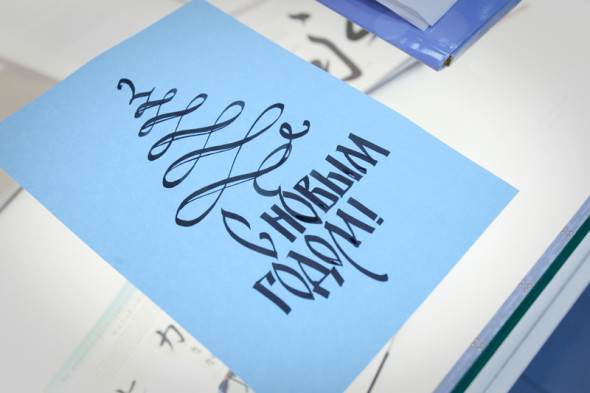
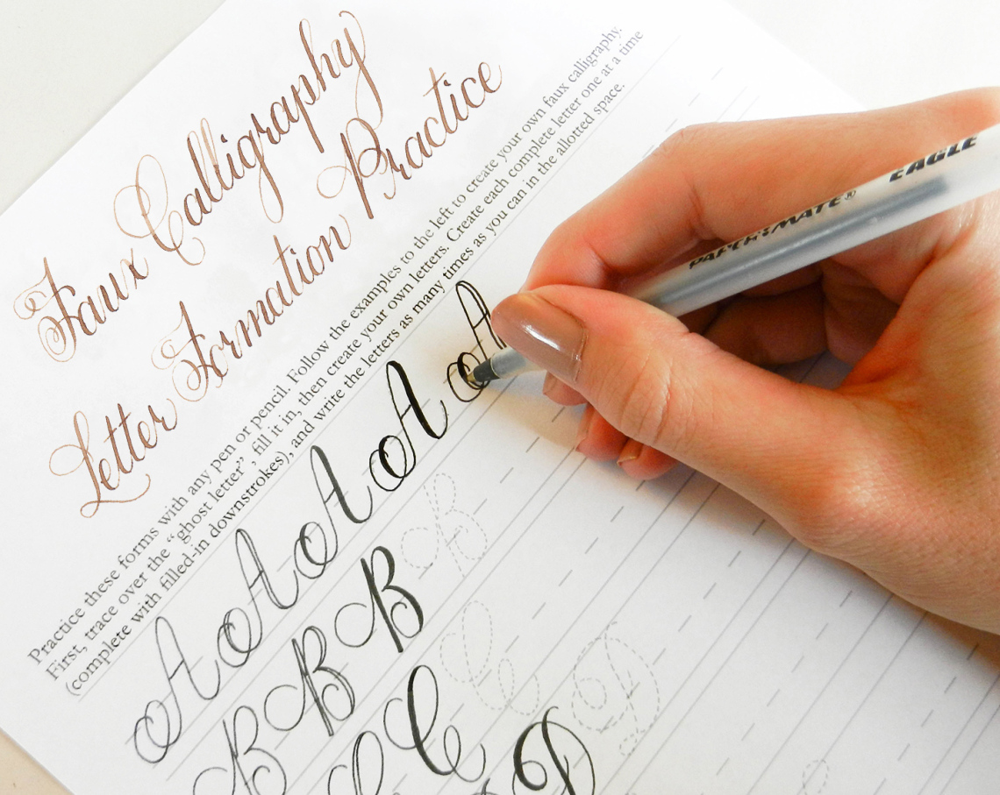

Каллигра́фия (от греч. καλλιγραφία — «красивый почерк») — одна из отраслей изобразительного искусства. Ещё каллиграфию часто называют искусством красивого письма. Современное определение каллиграфии звучит следующим образом: «искусство оформления знаков в экспрессивной, гармоничной и искусной манере».
История письменности — это история эволюции эстетических понятий, развивающихся в рамках технических навыков, скорости передачи информации и материальных ограничений человека, времени и пространства. Стиль письма, обычно описываемый как шрифт, рука или алфавит.
Современная каллиграфия довольно разнообразна — от бытовых рукописных надписей на открытках до высокого искусства, в котором экспрессия написанного рукой знака не всегда рождает чёткие буквенные формы. Классическая каллиграфия значительно отличается от шрифтовых работ и нестандартных рукописных форм, хотя каллиграф должен уметь делать и то, и другое; буквы сложились в такие формы исторически, но при этом они текучи и спонтанны и всегда рождаются в момент письма.
Сейчас каллиграфия существует в основном в форме пригласительных открыток и свадебных поздравлений, а также в граффити, шрифтах и рукописных логотипах, в религиозном искусстве, графическом дизайне, в высеченных надписях на камнях и в исторических документах. А также каллиграфию используют на телевидении в качестве оформления, в различных характеристиках, свидетельствах о рождении и в других документах, где предполагается писать от руки.


Каллиграфия применяется во многих неофициальных документах, таких, как открытки, поздравления с днём рождения и другие. Однако в официальных документах применяются только легко понятные её приёмы, так как требуется, чтобы надпись без труда разобрал любой человек. Кроме того, граффити, сделанное в виде подписей, очень часто представляет собой своеобразную каллиграфию, только с более толстыми штрихами
Что нужно для занятий каллиграфией
Занятия каллиграфией, как и занятия музыкой, требуют терпения, регулярных тренировок и, разумеется, хороших инструментов, которыми в каллиграфии являются две группы перьев: ширококонечные и остроконечные. Возможно, вас удивит, сколько производителей занимаются сегодня выпуском специальных перьев для каллиграфии. Возможно, они найдутся не в каждом магазине канцтоваров, но уж в интернет-магазинах вы наверняка найдете то, что вам нужно.
Чтобы полностью погрузиться в процесс каллиграфии и сосредоточиться на результате, предлагаем послушать аудиозаписи: